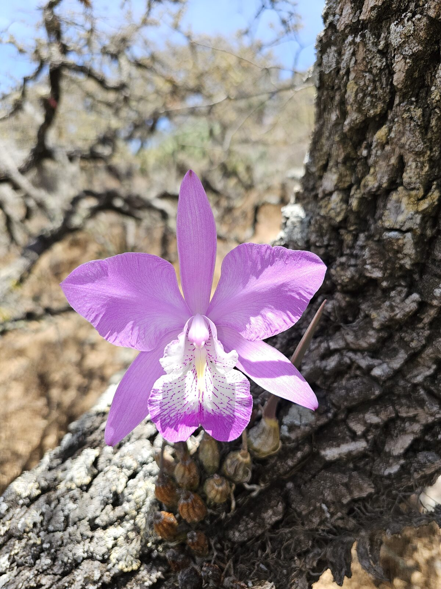

The Mexican flor de mayo: a spectacular endemic orchid at the meeting point of beauty, culture and conservation pressure.

Laelia speciosa is one of the emblematic orchids of central Mexico. Its large, rose-lilac flowers appear at the end of the dry season, often before the rains return, making it both visually striking and culturally visible.
The plant forms compact pseudobulbs with leathery leaves and produces one to several large flowers from mature growths. The flowers are usually pink to lilac with a darker, ornamented lip, although intensity varies strongly between individuals and local populations.
The species is associated with seasonally dry Mexican uplands, especially oak and pine-oak landscapes where epiphytes survive long dry periods by storing water in pseudobulbs and roots. This ecology makes the species very different from the cloud-forest orchids of the Orchidarc Reserve, but equally useful for understanding how Mexican orchids adapt to environmental extremes.
Its beauty has made L. speciosa a target for extraction from the wild. Conservation depends on reducing wild collection, documenting local populations, and promoting cultivated, provenance-aware plants rather than removing flowering adults from trees and rocks.
Orchidarc treats L. speciosa as part of the wider story of Mexican orchid heritage. The species helps connect conservation science with public memory, seasonal festivals, and the long history of orchids in Mexican landscapes.